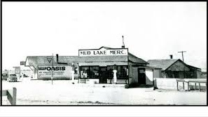
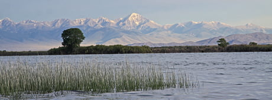
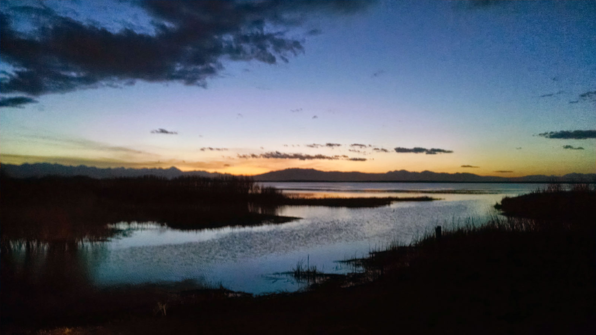

LaRue’s father John Freeman Quayle always had some type of a scheme going on. As a young man he and his brother went to Canada to homestead. After about a year they were literally frozen out and burned out; some of the cattle were frozen to death by storms and prairie fires burned off all grass. According to Grandpa Richard Macfarlane, when LaRue was a young adult her father recruited her into another homesteading scheme near Mud Lake Idaho. According to the Homestead act of 1862 “a citizen could claim 160 acres of public land in exchange for living on it, improving it, and paying a small fee”. A provision in the act allowed that by paying $1.25 per acre the title could be obtained in as little as six months. By recruiting LaRue to be a claimant John Quayle could claim 320 acres for himself and his wife and an additional 160 acres in LaRue’s name. LaRue was engaged in the effort to “improve the land” and ”lived on it” in a sheep camp. It was during this time that she had her mettle tested maybe for the first time but certainly not for the last time. LaRue was clearing the land using a three horse hitch pulling a harrow. She was working the horses postilion style riding on a horse instead of driving them from behind. While clearing brush and weeds a coyote was flushed from its cover causing the horses to suddenly shy. LaRue fell off the horse’s back down between the horses and subsequently under the harrow. Although not permanently injured, her back bore proof of the character shaping incident all of her life.